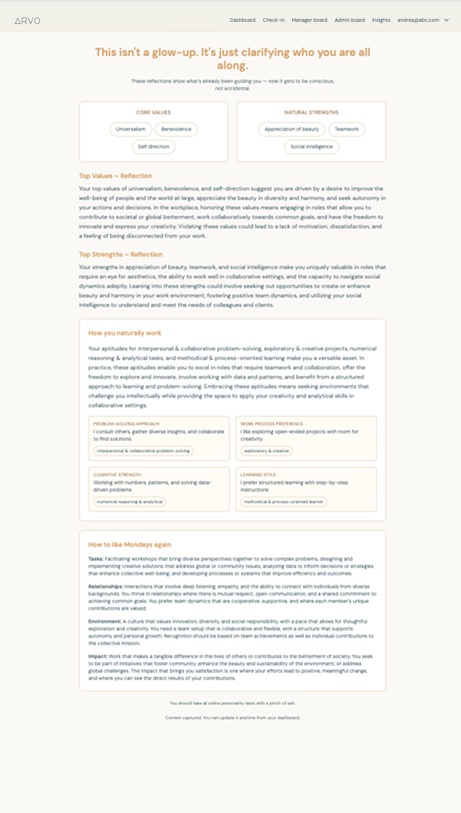
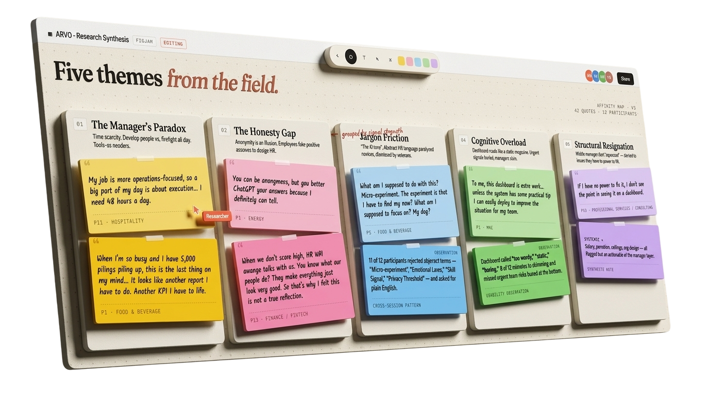
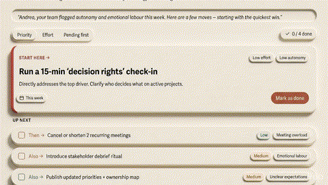
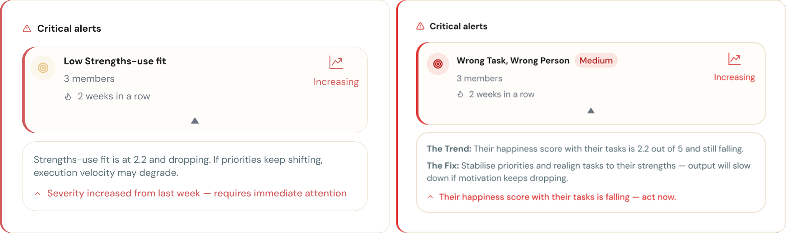
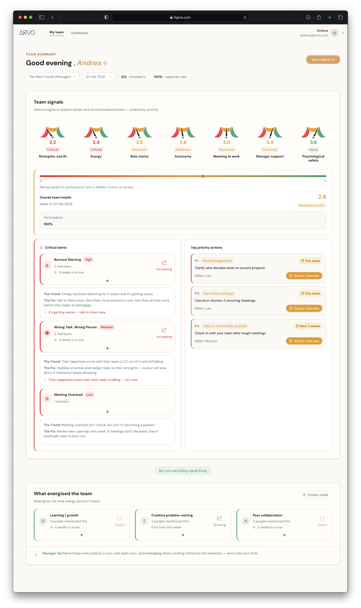

Six weeks. A team of six. A client who needed convincing. And a usability study that required uncomfortable honesty from everyone in the room.
Read the story ↓01 The Problem
83%
Rejection rate — Round 110 of 12 managers gave up before completing a single task on the original dashboard.
12
Moderated sessionsManagers across 8 industries — the exact users ARVO would live or die by.
5
Friction points foundEvery session revealed the same pattern: the tool meant to save time was consuming it.
Ten of twelve managers quit before finishing the session. The dashboard was supposed to surface team health signals (indicators of how a team is doing — stress, workload, risk) in minutes — but interpreting it took longer than the insight was worth.

02 The Decision
We mapped every friction point from twelve sessions into three buckets: design problems, product-level decisions, and out-of-scope issues — only the founder could unlock the third category.
Cognitive Overload
Dashboard reads like a static report — 67% missed critical signals entirely
Jargon Friction
92% couldn't act on labels like "Strengths-use fit" or "Execution risk"
Anonymity Gap
67% didn't trust responses couldn't be traced — needs a product-level architecture decision
Manager Authority Gap
58% felt powerless — recommendations required HR authority managers don't have
Survey Fatigue
Weekly check-ins felt like "another task" — frequency is a product strategy call
Digital Homework Trap
Checklists felt like admin — partially addressed via calendar integration
AI Output Jargon
AI-generated labels were too academic — mitigated in our plain-English taxonomy work
2
Problems we scoped
Cognitive overload + jargon
7
Total mapped
Five returned to client — three from research, two surfaced during usability testing.
Before any design work started, we ran a co-creation session with the ARVO team to agree which battles were ours to fight. Shared ownership before any solution was named.

Research synthesis — 12 sessions, 8 industries, before anything went into Figma.
Energizers & Drainers — the one section managers actually opened without being prompted. Most of the dashboard was ignored. This wasn't. Our recommendation: protect it. Don't redesign what's working.
03 The Fixes
We scoped hard and fixed properly. Every decision traces back to something a real manager told us in session.
Dense text. Critical signals missed by 67%.
Everything competed for attention at once — managers scanned straight past at-risk alerts because the dashboard read like a report. One colour, one number, immediate meaning. No interpretation required.
→ Traffic-light dials
Dense text widget (before) → Traffic-light dial (after). Same data. One requires reading. One doesn't.
Labels 50% (6/12) of experienced managers found too generic to act on.
Terms like "Strengths-use fit at 2.2" are meaningful in research. Paralyzing at 9am. We rewrote every AI label into plain English — not dumbed down, just usable. The content didn't change. The trust did.
→ Plain-English taxonomy
Academic terminology (before) → plain English (after). The argument is about language, not layout.
04 Outcome

93%
Instant comprehension — Round 2
Managers read team health without reading a sentence. Round 1 baseline: 17%.
13
Testers — Round 2
Fresh pool of managers. Neither problem from Round 1 appeared again.
2 of 7
Problems resolved by design
Five returned to client — three from research, two surfaced during usability testing. Not a design failure, but a boundary.
Presenting the three unresolved problems was the hardest facilitation moment of the project. A designer who papers over business-logic failures with prettier screens isn't solving problems — they're delaying them.
"Working with this team was a genuinely impressive experience. From the outset, they handled all project concerns with professionalism and responsiveness. What stood out most was their user research capability — they recruited the right profiles within a very short timeframe, and conducted interviews in a manner that participants described as approachable, friendly, and open. Their design recommendations were methodically tested and immediately actionable, directly strengthening the product's user experience. The final mockups reflected a level of craft and polish I wouldn't hesitate to put in front of investors or clients. Any organisation looking to undertake serious UX work would be fortunate to have this team."
05 Reflection
The hardest skill in this project wasn't designing the interface — it was telling a founder that three of her seven problems weren't ours to solve.
Hold the design boundary — out loud
Knowing where design ends isn't enough. Explaining that boundary in a way that feels like partnership, not refusal, takes preparation — I wrote the client brief for the three business problems before the final presentation.
Workshop structure is leadership structure
How you run a co-creation session shapes what a client accepts afterwards. Opening with user quotes before any findings was deliberate — it changed the tone from critique to shared investigation.
Scope decisions are the hardest decisions
Fixing three things well beats fixing seven partially. Holding scope against a client who wants everything solved at once was harder than the design work itself.